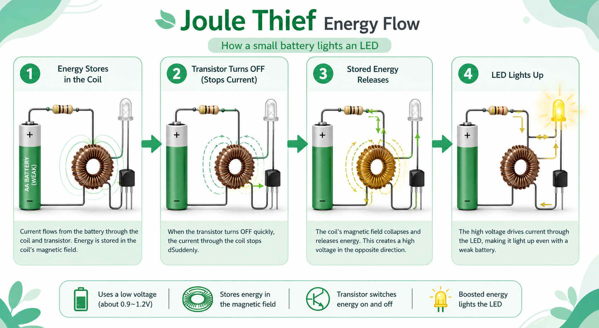
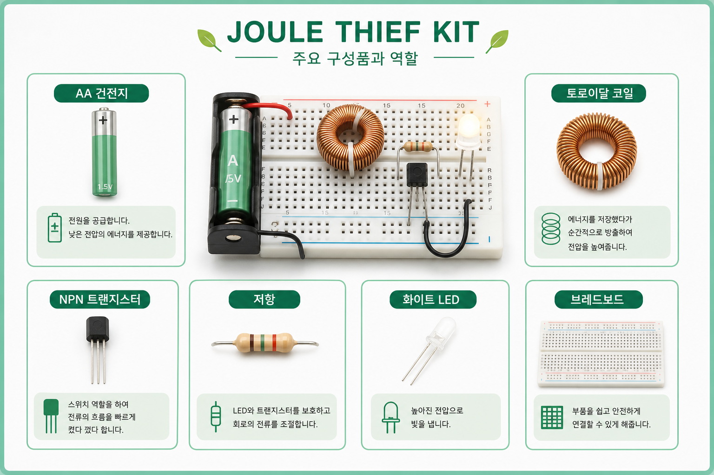

왜 그냥 LED가 안 켜질까?
흰색 LED는 보통 AA 건전지 1개보다 높은 전압이 필요합니다. 약한 건전지는 더 어렵습니다.
제품 원리
Joule Thief 회로는 낮은 전압을 그대로 쓰는 것이 아니라, 코일과 트랜지스터의 빠른 동작으로 순간적인 높은 전압을 만들어 LED를 켭니다.

흰색 LED는 보통 AA 건전지 1개보다 높은 전압이 필요합니다. 약한 건전지는 더 어렵습니다.
남은 에너지를 코일에 모았다가 순간적으로 방출해 LED가 켜질 조건을 만듭니다.
건전지가 완전히 쓸모없는 것이 아니라, 회로 설계에 따라 다르게 활용될 수 있음을 보여줍니다.

| 건전지 | 낮은 전압을 공급하는 출발점입니다. |
|---|---|
| 코일 | 에너지를 잠시 저장했다가 방출합니다. |
| 트랜지스터 | 스위치처럼 빠르게 켜지고 꺼집니다. |
| 저항 | 트랜지스터로 들어가는 전류를 조절합니다. |
| LED | 회로가 만든 결과를 빛으로 보여줍니다. |